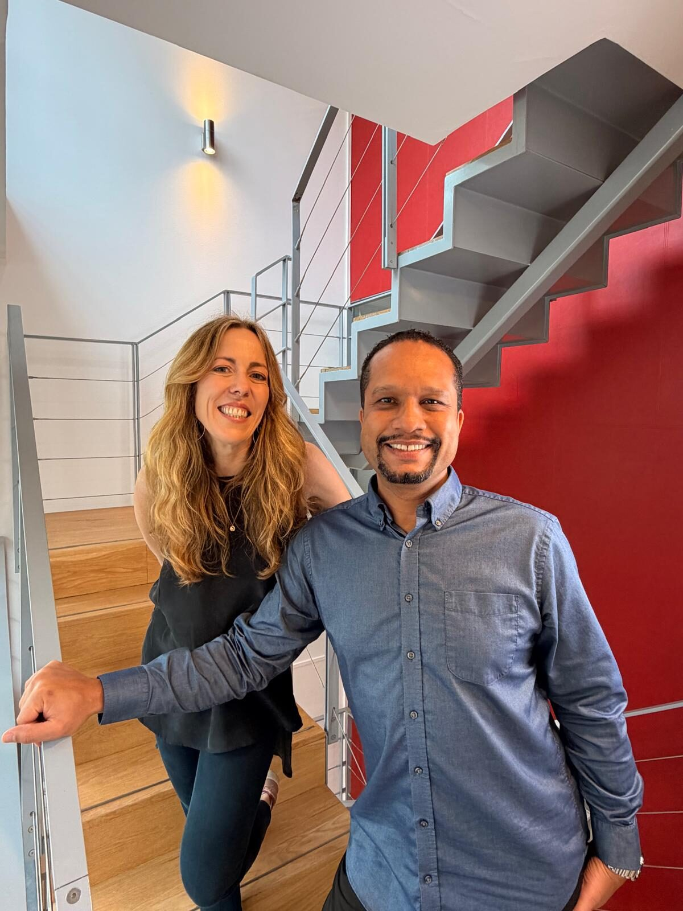
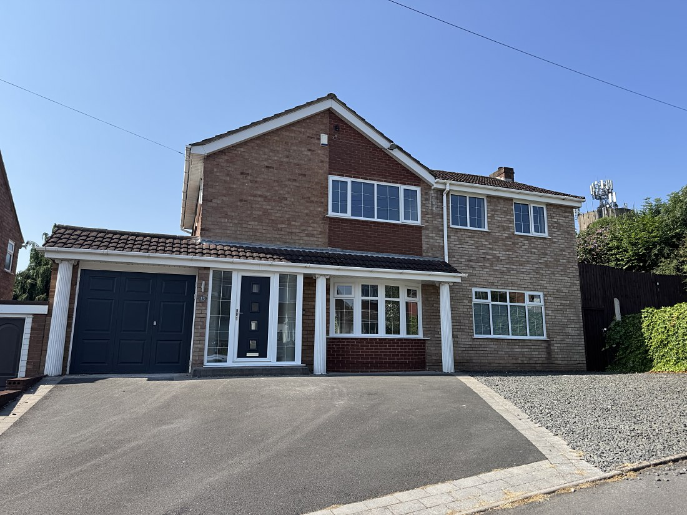
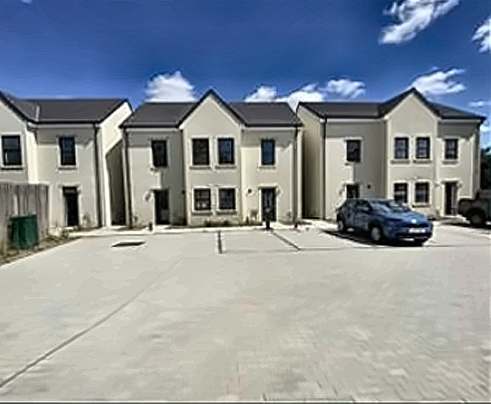
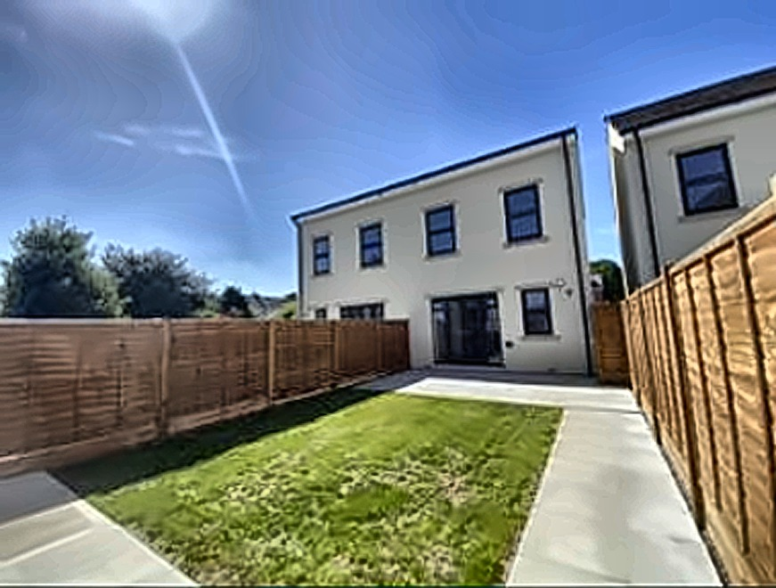
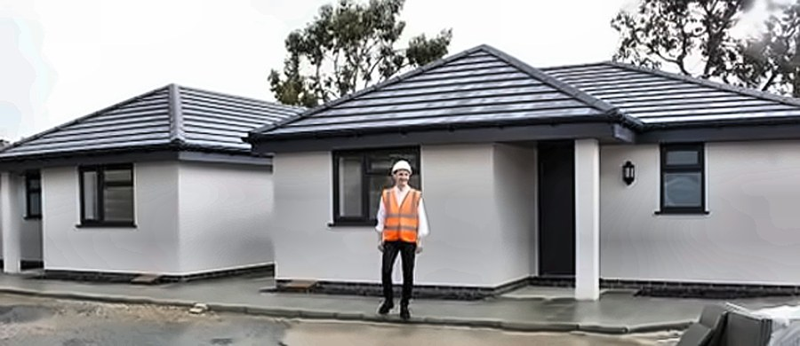
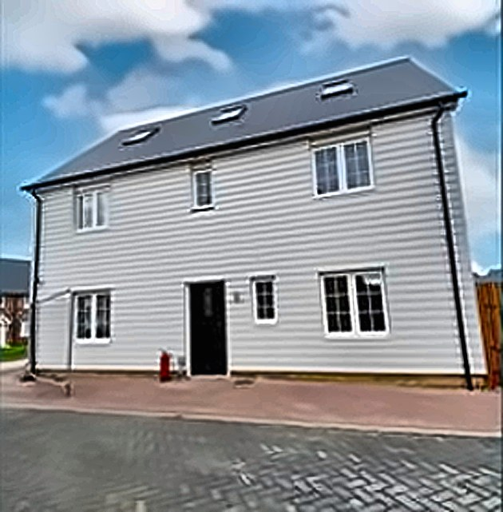
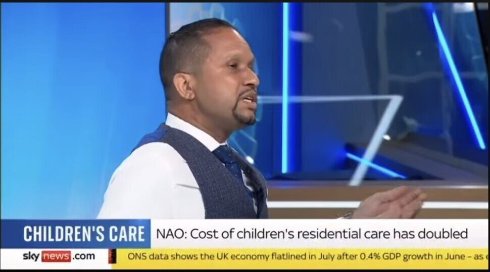
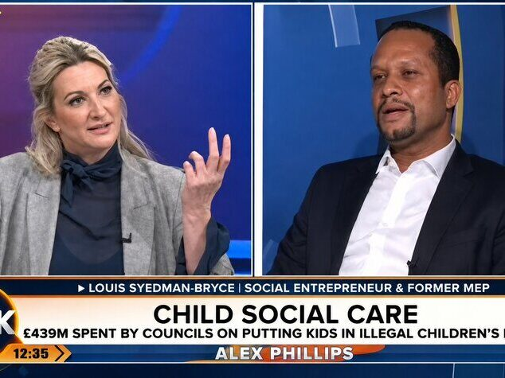

Louis Stedman-Bryce: social entrepreneur, property investor, commentator on children's services and a former elected Member of the European Parliament.
Louis Stedman-Bryce
Children are being placed in Airbnbs and caravans
Thirty-five years ago, at 15, I left home to escape violence and abuse. I was homeless for a while, until social services placed me in a home in a town where I didn't know anyone, miles from my grandparents and friends.
Being placed away from everything familiar is still a reality for too many children today, and it's one of the things we're trying to change. But it's not the problem we exist to solve.
Our biggest goal is supporting children with the most complex needs in small, solo or dual registration settings, because these are the children most likely to end up in unregistered accommodation. Right now, vulnerable children with complex needs are being housed illegally in caravans, holiday camps, and Airbnbs, simply because no registered home will take them. Inkfish Care was created to be that place, built specifically for the children everyone else says are too complex to take.
Figures independently verified against the 2019 returning officer's declaration. See sources in section 05.
Building solutions
Not criticising from the sidelines
Over the next 5 years we are developing 30 new specialist children's homes, with the first opening in 2026, focused on complex, solo and small cluster provision to support the children most likely to be placed in unregistered accommodation.
Nearly 60% of children in illegal placements have an Education, Health and Care Plan, and a further one in ten have special educational needs or a disability. These are exactly the children our model is built for.
Councils spent an estimated £353 million in 2025 on homes that legally shouldn't exist. I founded Inkfish because children deserve better than the least bad option, and because doing this properly shouldn't be the exception.
Care comes first
Councils spent an estimated £353 million in 2025 on illegal placements, at an average of £10,500 a week per child, because the right registered provision did not exist when a child needed it. That is the problem. Good homes, in the right places, run by operators who are in it for the right reasons, are the answer to it.
Every decision in this sector should follow from that one principle. It's the first of the 5 Key Principles behind everything we structure at TIIN, and it's not negotiable.
Purpose meets profit
The commercial case follows from that, and it is real. Converting a residential property to a commercial children's home changes what the building is worth. With the right lease and covenant in place, that shift produces a valuation uplift a straightforward residential refurbishment cannot match, alongside long-term income, with running costs sitting with the operator rather than the landlord. It's an entry into commercial property at a fraction of the capital a warehouse or industrial unit would demand, and genuinely hands-off once the structure is right.
This isn't returns instead of responsibility. It's returns that follow from doing it properly, structured on foundations built to hold up through change, not just to look good on a spreadsheet.
Better futures require better investors
The 12 Month Children's Homes Investment Programme, delivered with Carly Houston through Thrive Impact Investors Network (TIIN), takes people from little or no sector knowledge to owning their own children's homes investment. It also teaches you how to choose an operator you'd be comfortable being publicly associated with, because that decision matters more than anything on the spreadsheet.
Testimonials, live deal examples and a downloadable guide built on our 5 Key Principles are all on TIIN.
Programme fees, cohort dates and case studies are published on TIIN, not reproduced here.






Start with the gap, not the building
I work with local authorities and care providers to create housing that answers a real capacity gap: specialist and complex provision, transitional and supported housing. The work is turning an identified need into a delivered scheme.
I have delivered multiple supported and transitional housing schemes for local authorities and care providers, and I bring the same approach to every brief. Understand the gap first. Build for it second.
Two things the sector consistently underweights.
The first is environment. Against a backdrop of staff shortages, the property can be both an attraction and a retention asset when done well. People stay where they are proud to work, and homes that retain quality people are more likely to produce quality outcomes for the children they support.
The second is flexibility. Commissioning intentions change, cohorts change, and regulation is changing now. A building designed for one narrow use is a liability the day the need moves. I design for what the property can become as well as what it opens as.
For institutional and private investors, that means we structure around what the scheme needs to be in five years, not just point you at a property. Durable income comes from the first, never the second. That's what starting with the gap actually means.
The changing landscape
Children's social care is going through the most significant policy change in a generation. Here is what I am watching, with sources, so you can check it yourself.
The Children's Wellbeing and Schools Act 2026
A new law just gave Ofsted the power to fine failing providers, and put a profit cap on the table.
Cont…
The Children's Wellbeing and Schools Act 2026
A new law just gave Ofsted the power to fine failing providers, and put a profit cap on the table.
The Children's Wellbeing and Schools Act 2026 received Royal Assent on 29 April 2026. The Department for Education published its implementation plan, Delivering the Children's Social Care Reset, on 21 May 2026. Between them they introduce regional cooperation arrangements for looked after children's accommodation, a new provider oversight scheme allowing Ofsted to demand improvement plans and issue fines, enhanced financial transparency for the largest providers, and a stated intention to cap excessive profits, subject to consultation. A new category of accommodation for children whose liberty is restricted for treatment and care is due to commence from autumn 2027.
Source: UK Parliament, Children's Wellbeing and Schools Act 2026 and DfE, Delivering the Children's Social Care Reset, 21 May 2026
Regional Care Cooperatives
Commissioning power is shifting to regional bodies, and smaller specialist providers may be squeezed out first.
Cont…
Regional Care Cooperatives
Commissioning power is shifting to regional bodies, and smaller specialist providers may be squeezed out first.
From summer 2026 the Secretary of State gained powers to direct 2 or more local authorities into regional cooperation arrangements. Pathfinder Regional Care Cooperatives are already running in Greater Manchester and the South East, with more sought during 2026. The direction of travel is clear: commissioning power is moving from individual local authorities to mandated regional bodies. Smaller and specialist providers, the ones actually building solo and small cluster capacity, are widely reported to be at risk of being squeezed out by larger operators with the scale to win regional contracts. That is a concern I hear directly from providers, not a hypothetical one.
Source: DfE implementation plan, 2026 and Local Government Association
Local government reorganisation
Who commissions children's placements and how they do it are both being rebuilt at the same time.
Cont…
Local government reorganisation
Who commissions children's placements and how they do it are both being rebuilt at the same time.
Alongside this, large parts of England are going through local government reorganisation, restructuring the very authorities that commission children's placements. Reorganising who commissions is happening at the same time as reorganising how commissioning works. Providers and investors need to understand both, not just one.
Source: House of Commons Library, Local government reorganisation 2026
Illegal and unregistered placements
775 children in illegal homes on a single day, at a cost of £439 million a year. Some placements top £1 million each.
Cont…
Illegal and unregistered placements
775 children in illegal homes on a single day, at a cost of £439 million a year. Some placements top £1 million each.
Unregistered does not mean cheap. On a single day in September 2024, 775 children were placed in illegal, unregistered homes, at an estimated annual cost to the taxpayer of more than 439 million pounds. 33 of those placements cost more than 1 million pounds each. These are children with nowhere else to go, in provision nobody has inspected, at a price nobody would choose if the right option existed.
Source: Children's Commissioner for England, 16 December 2024
Market fragility
Private equity is moving in at 11% returns. The last care sector this happened to collapsed under the debt.
Cont…
Market fragility
Private equity is moving in at 11% returns. The last care sector this happened to collapsed under the debt.
A growing share of the market is owned by highly leveraged, private equity backed groups. The Competition and Markets Authority found in 2022 that children's homes providers were earning average returns of around 11%, against a normal expected range of 3% to 6%, with some fostering agencies earning margins closer to 20%. Southern Cross, once the UK's largest care home operator, collapsed in 2011 under exactly this kind of structure, high rents owed to landlords following years of aggressive expansion, affecting around 31,000 residents in a different part of the care market. The parallel is not exact, but the underlying risk, debt funded growth chasing government fee income, is the same one worth watching here.
Source: Competition and Markets Authority, children's social care market study, March 2022 and LSE British Politics and Policy
Foster care capacity
65% of foster carers are over 50. Every one lost pushes another child toward residential care instead.
Cont…
Foster care capacity
65% of foster carers are over 50. Every one lost pushes another child toward residential care instead.
Foster care is the other side of this. Ofsted data has shown 65% of foster carers are aged over 50, and a quarter over 60, a profile that means natural retirement will keep shrinking capacity while new applications are already falling. Every foster placement that cannot be found or sustained is a child who may end up in residential care instead, often at the complex end where specialist provision is already scarce. It is part of why I am also developing new models to address the foster care shortage directly. More on that when it is ready to share.
Source: GOV.UK / Ofsted, Capacity in foster care stalling despite rising demand
Media & commentary
I've contributed to national broadcast coverage including Sky News and TalkTV, and for several years have been raising the crisis in children's care directly with colleagues across Westminster and the House of Lords.
What I offer a newsroom is straightforward: a perspective from someone who lived this system, not studied it. I'll name the structural failure driving your headline, not talk around it. I'm not interested in the safe soundbite, and I won't pretend the sector is doing better than it is.


Let's talk
If you would like to connect, tell me a little about what you are working on and how I can help?
Prefer to just talk about consultancy support? Call 01273 569 396, no form required.